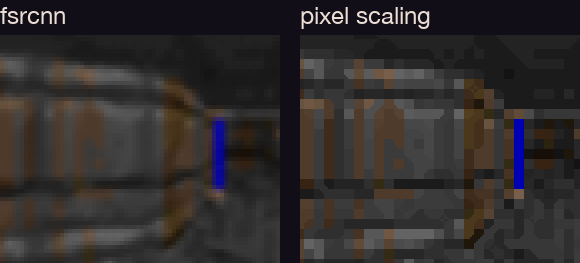
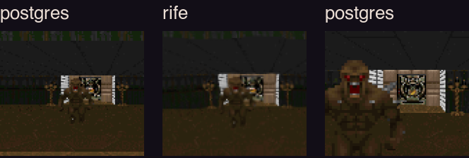
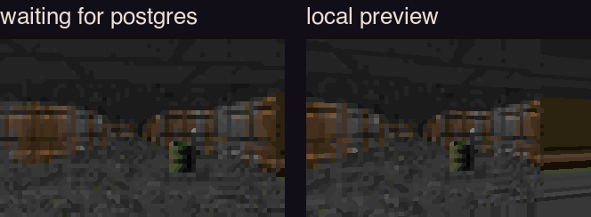

dlss (kinda)
four, actually.
after all that work on the engine, i had a version of doom i could sit down and play. i was getting somewhere around 5–10 fps. walking toward a door, i could see it jump a little closer every time postgres sent me a new picture.
i wondered what i could do with those pictures once they reached my computer. then i remembered dlss.
nvidia’s dlss has two features i wanted to try here. with super resolution, the game draws a smaller image. dlss uses that image, earlier frames and motion data to reconstruct a larger one. frame generation adds pictures between the frames the game draws.
a bigger picture
at 160×100, postgres has 16,000 pixels to shade and send. at 64×40, it has 2,560. the question was what those 2,560 pixels would look like at the size i wanted to play.
for the upscale i tried fsrcnn, a model that takes one small image and estimates a larger one. i used its 3× model and resized the result to 160×100. in the left image, the blue stripe bleeds into the wall. it felt like a different game.

so i made each pixel of the 64×40 image a 5×5 block of the same color. there’s a little trick for diagonals. if the pixel above and the one to the left share a color, i can borrow it for a few pixels in the top-left corner. that gives the edge a smaller stair step, using colors already in the picture.
between two frames
in the first postgres frame below, the imp is by the bright doorway. by the second, it’s nearly in my face. rife is a model that makes frames in between. i gave it those two pictures and asked for a frame 40% of the way through. that’s the picture in the middle.

the model runs on my computer. i give it the small pictures from postgres and ask for four frames at 20%, 40%, 60% and 80%. the client scales them and schedules them in order, followed by the second postgres frame. that gives me up to five pictures to show every time a new one comes in.
on a 24-second run through e1m7 on planetscale, i compared two views of the same incoming 64×40 frames. holding each picture until the next one arrived gave me 7.9 changes a second. with rife, the picture changed 28.1 times a second. there was still a stretch of about 1.4 seconds where the picture held still.
turning before the next frame
rife needs that second frame before it can start. by the time i’m watching the pictures it made, i might already be pressing the key to turn the other way.
my keypress reaches the client first. the client adds my pending turns to the last camera angle postgres confirmed. then it works out where each pixel in the turned view would land in the picture it’s already showing. the green post shifts left while the next frame is still on its way.

a real turn brings a little more of the room into view. the client can only stretch the pixels at the edge of the old picture, so i stop the preview at about 10 degrees. when postgres sends another frame, it comes with the camera angle and the tic. the client drops the turns that frame already accounts for and keeps the ones still pending.
i ran the same route again on planetscale at 160×100. the detail was better, and rife took the world image from 6.8 to 27.4 changes a second on that run. playing at that resolution, i watched the terminal counter go through the 30s and 40s and hit 50 in some parts. by then, what i was fiddling with was how sharp i wanted the walls to look.